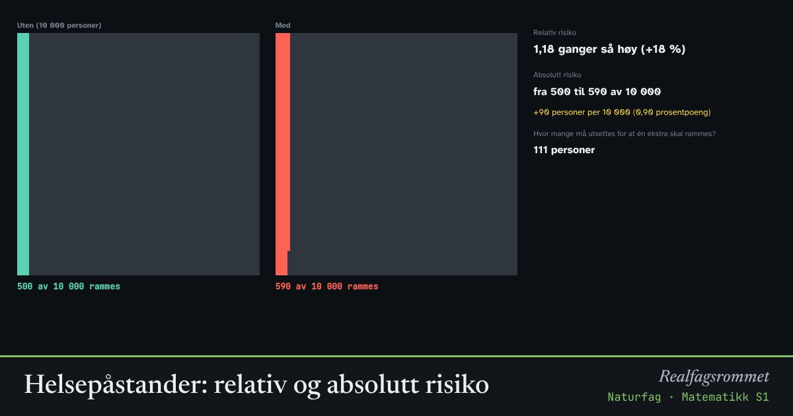

Helsepåstander: relativ og absolutt risiko
«Dobbel risiko!» høres skummelt ut. Men dobbelt av hva? Her ser du forskjellen på relativ og absolutt risiko, og hvorfor små studier kan gi dramatiske resultater bare ved tilfeldighet.
Start animasjonen
Formler
Om animasjonen
Relativ risiko sier hvor mange ganger større risikoen blir. 18 % høyere risiko betyr relativ risiko 1,18. Absolutt risiko sier hvor mange som faktisk rammes. Er grunnrisikoen liten, blir den absolutte økningen også liten, selv om den relative er stor.
Overskrifter bruker ofte relativ risiko fordi det høres dramatisk ut. Spør alltid: Hvor mange rammes uten og med? Hvem har gjort studien? Hvor mange var med?
I en liten studie kan tilfeldigheter gi store utslag. Kjør mange små studier og se hvor ofte en studie finner «dobbel risiko» selv om den sanne effekten er liten. Store studier og mange studier som peker samme vei, er mer pålitelige.
Eksemplene er omtrentlige og ment for å vise sammenhengen. Pålitelige kilder for helseinformasjon er for eksempel helsenorge.no og Folkehelseinstituttet.
Prøv dette
- En avis skriver at noe «dobler risikoen» for en sykdom som rammer 2 av 10 000. Hvor mange flere rammes?
- Hva er størst: den absolutte økningen i eksemplet med 18 % høyere risiko, eller i eksemplet med sjelden bivirkning?
- Kjør 100 studier med 50 personer i hver gruppe. Hvor mange av dem fant mer enn dobbel risiko?
- Hva bør du sjekke før du stoler på en helsepåstand du finner på nett?
Kompetansemål
- Naturfag: Helse og livsstil, og hvor pålitelig informasjonen er
Mer om statistikk og sannsynlighet
- Sentralmål og spredningsmål
- Standardavvik steg for steg
- Trekning fra urne: binomisk og hypergeometrisk
- Galtonbrettet og normalfordelingen
- Sentralgrensesetningen
- Hypotesetesting
- Hvor mange fisk er det i vannet? Fangst–gjenfangst